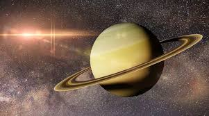

Saturne est célèbre pour ses anneaux spectaculaires, composés de glace et de poussière.
Elle possède également de nombreuses lunes fascinantes, comme Titan et Encelade.
Ses caractéristiques en font une cible prioritaire pour l'exploration spatiale.
* Type : Géante gazeuse
* Distance moyenne au Soleil : ~1,43 milliard de km
* Masse : 5,68×1026 kg
* Rayon : ~58 232 km
* Période orbitale : ~29,5 ans terrestres